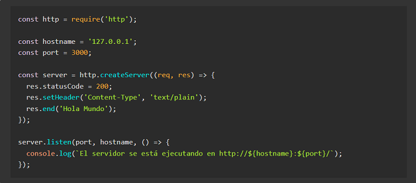

Node.js
Node.js es un entorno de ejecución para JavaScript construido con V8, motor de JavaScript de Chrome.
¿Qué es Node.js?
Node.js es un entorno en tiempo de ejecución multiplataforma, de código abierto, para la capa del servidor (pero no limitándose a ello) basado en el lenguaje de programación JavaScript, asíncrono, con E/S de datos en una arquitectura orientada a eventos y basado en el motor V8 de Google. Fue creado con el enfoque de ser útil en la creación de programas de red altamente escalables, como por ejemplo, servidores web.4 Fue creado por Ryan Dahl en 2009 y su evolución está apadrinada por la empresa Joyent, que además tiene contratado a Dahl en plantilla.
Node.js es similar en diseño y está influenciado por sistemas como Event Machine de Ruby y Twisted de Python. Pero Node.js lleva el modelo de eventos un poco más allá. Incluye un bucle de eventos como runtime de ejecución en lugar de una biblioteca.
Ejemplo de código: Hola Mundo
A continuación veremos un pequeño programa "Hola Mundo" escrito en JavaScript utilizando algunas de las tecnologías de Node.js, que lo hacen una muy buena elección para grandes aplicaciones web
En el fragmento de código anterior se ve como pueden atenderse muchas conexiones simultáneamente. Por cada conexión, se activa la devolución de llamada o callback, pero si no hay trabajo que hacer, Node.js se dormirá. Esto contrasta con el modelo de concurrencia más común de hoy en día, en el que se emplean hilos del Sistema Operativo. Las redes basadas en hilos son relativamente ineficientes y muy difíciles de usar.